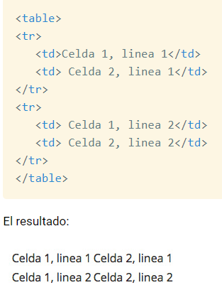
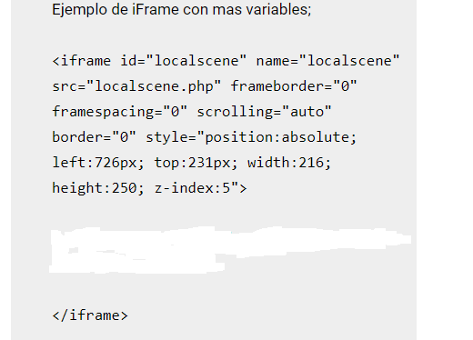
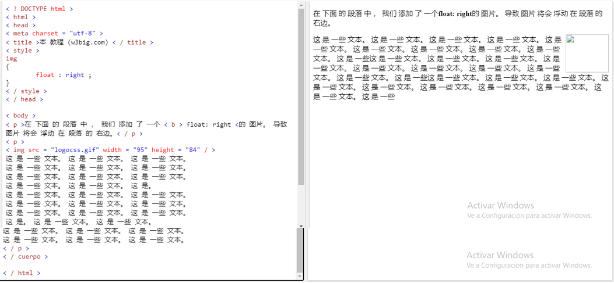
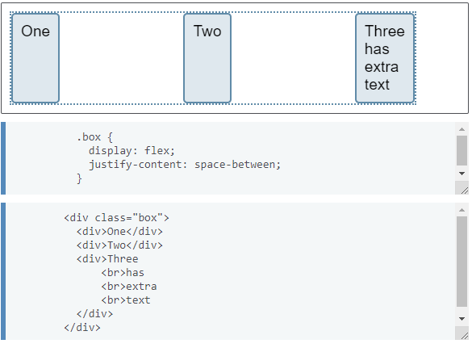

Diseño usando Tablas HTML
Una tabla en un conjunto de celdas organizadas en el cual por medio de ellas podemos alojar distintos contenidos para HTML.
Ejemplo de tablas en HTML
Introducion
Se analiza el contexto en el que se deben aplicar las técnicas y se fijan criterios de selección.El diseño es un elemento de la vida que combina imaginación, creatividad, libertad de expresión, y visión. ... El diseño es el alma de todo lo creado por el humano.”
Etiquetas básicas para crear tablas en HTML
Se dice que las tablas se definen a través de una etiqueta TABLE hasta su cierre, a continuación les estaré mostrando como funcionan las tablas HTML a través del siguiente ejemplo y después de ella mostrando su resultado
Diseño con iframes
Por lo que estuve analizando con los iFrames se pueden montar una página web dentro de otra. Es por eso que un iFrame son objetos que al manipularse lo pueden hacer con la misma libertad o derecho que cualquier otro elemento que podamos utilizar dentro del espacio HTML.
Ejemplo de diseño con Iframes
Diseño con Float CSS
Este diseño lo que nos permite hacer en HTML es como una simple refracción de espacios ya que solo podemos desplazarnos hacia ambos lados del costado es decir que si ponemos una imagen antes de el no vamos afectarla de tal manera que ella esta por delante del elemento flotante y en otra parte si algún otro elemento como una imagen etc..., si este se mantiene después del elemento flotante dichos elementos se irán centrando en el con el fin de que solo lo podamos desplazar de un lado a otro como lo dice su funcionamiento.
Ejemplo de diseño con Float CSS
Diseño con Flexbox
Por lo que investigue un Flexbox es una manera o método que se utiliza para diseñar páginas unidimensionalmente, es decir que sólo se pueden medir en una dirección ya puede ser en una línea, con el fin de compaginar elementos en filas o columnas, (ósea es llevar un orden de los elementos que tengan alguna relación mutua).
Ejemplo de diseño con Flexbox
Diseño con Grid CSS
El CSS Grid es más que todo un sistema que se creó con el fin de poder realizar diseños bidimensionales, es decir para diseñar su ancho y altura basada en cuadrículas, todo esto tenia como objetivo cambiar o modificar completamente la forma en que se diseñan interfaces para los usuario basadas en cuadrículas.
Ejemplo de Grid CSS en HTML
<body>
<header>
<div class="wrapper">
<div class="one">One</div>
<div class="two">Two</div>
<div class="three">Three</div>
<div class="four">Four</div>
<div class="five">Five</div>
<div class="six">Six</div>
</div>
</header>